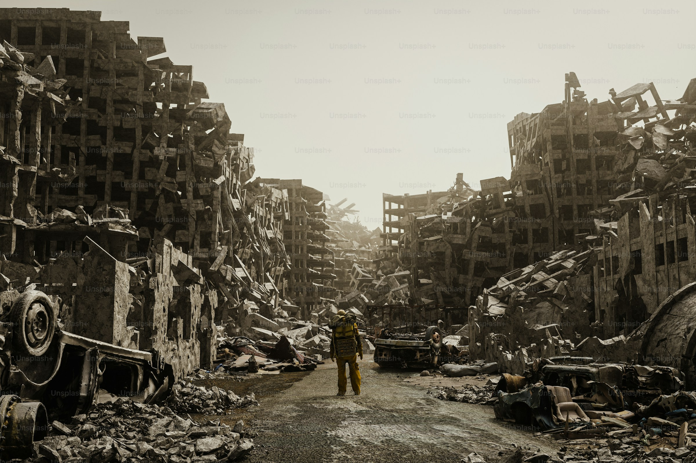
Ukraine Today
- Country
- Ukraine, Eastern Europe
- Conflict Status
- Ongoing Crisis since 2022
- Displaced People
- Millions in Crisis
- Focus Areas
- Frontline Relief & Housing
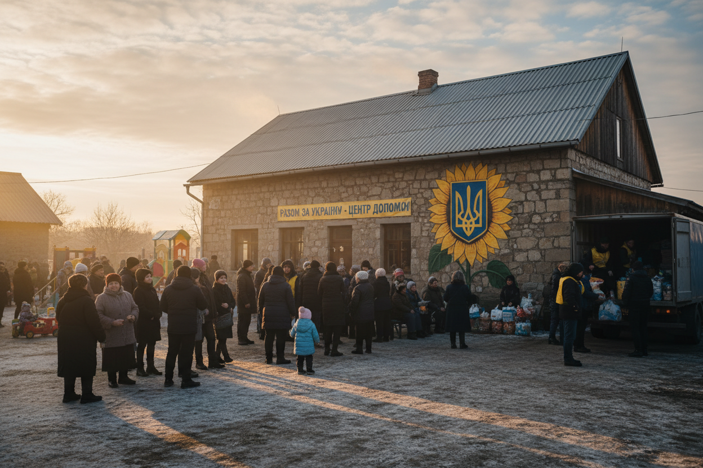
Since the escalation of conflict, millions of families have been forced from their homes. In the face of uncertainty, communities are rallying together with incredible resilience. Our work focuses on providing immediate humanitarian aid to those displaced and long-term rebuilding support for families whose lives have been fractured by war.
Why Help is Needed
Humanitarian Needs
Emergency survival kits for families living in frontline areas and temporary shelters.
Food Security
Sustained nutrition programs to combat supply chain disruptions and inflation.
Shelter & Housing
Providing safe, warm housing for displaced families facing harsh winter conditions.
Medical Support
Critical medications and equipment for mobile clinics and local hospitals.
Long-term Recovery
Infrastructure support and psychological care to help communities begin to heal.
Our Commitment
Our presence in Ukraine is built on trusted, long-term relationships with local churches and community leaders. We don't just provide aid; we walk alongside families through their hardest seasons. By partnering with existing local networks, we ensure that resources reach those with the greatest need efficiently and transparently.
Read the Full Story- Ukraine Relief Network
- Kyiv Community Fellowship
- Frontline Logistics Center
Who We Help
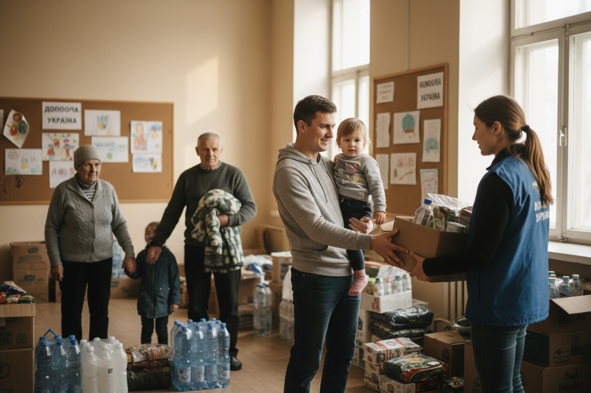
Families
We provide direct assistance to families ensuring they have the essentials to survive and thrive.
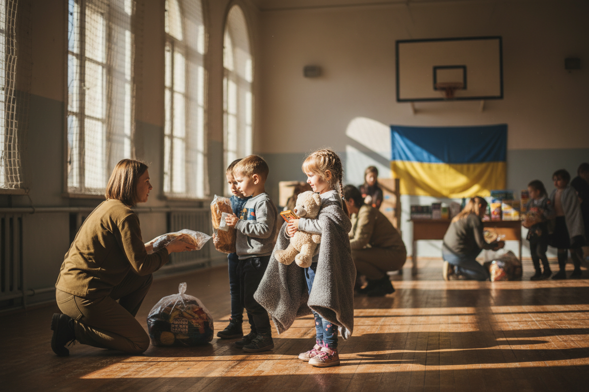
Children
We provide direct assistance to children ensuring they have the essentials to survive and thrive.
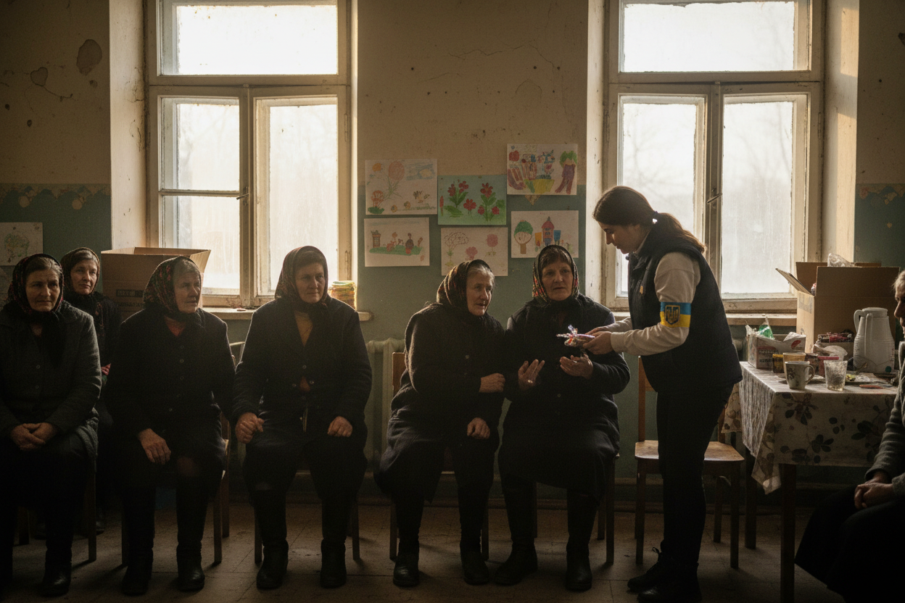
Widows
We provide direct assistance to widows ensuring they have the essentials to survive and thrive.
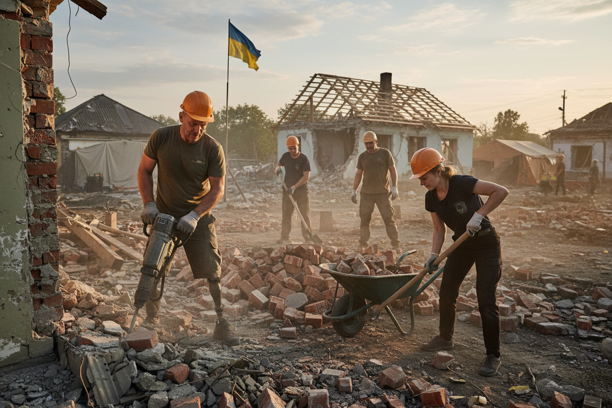
Veterans
Support for veterans focuses on rebuilding trust and physical infrastructure.
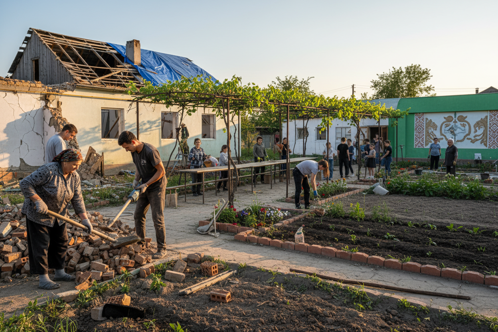
Communities
Support for communities focuses on rebuilding trust and physical infrastructure.
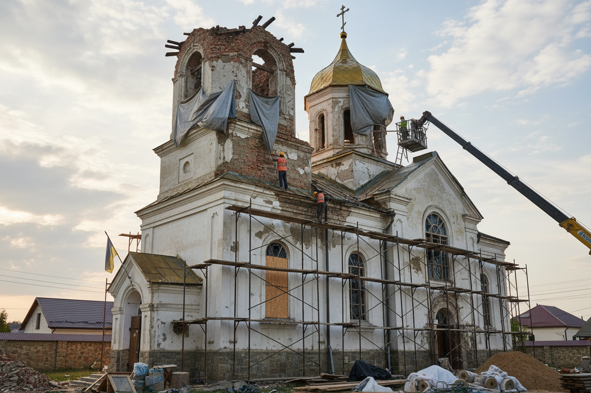
Local Churches
Support for local churches focuses on rebuilding trust and physical infrastructure.
Your Impact
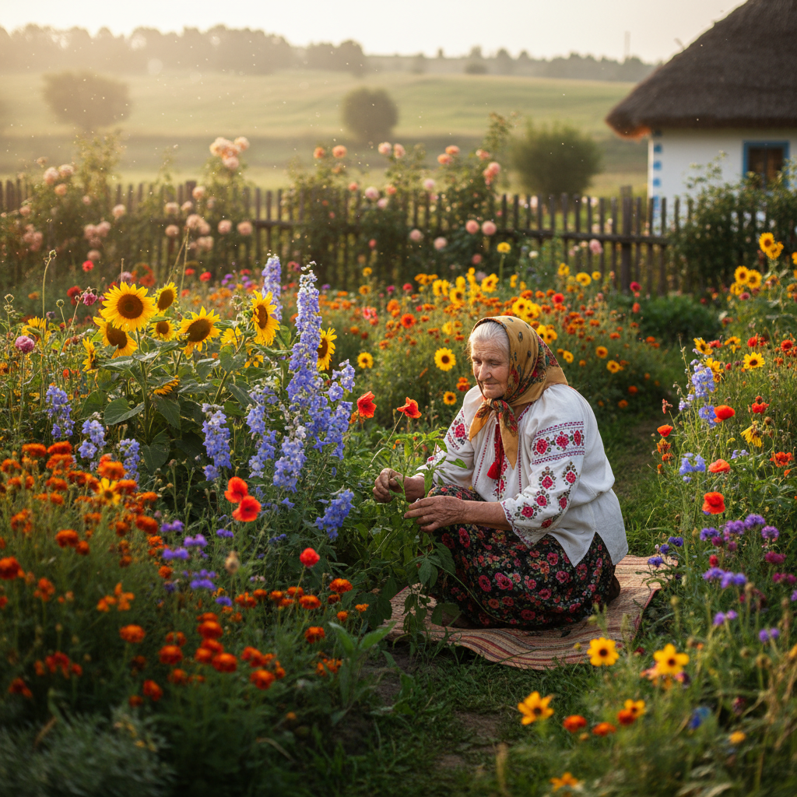
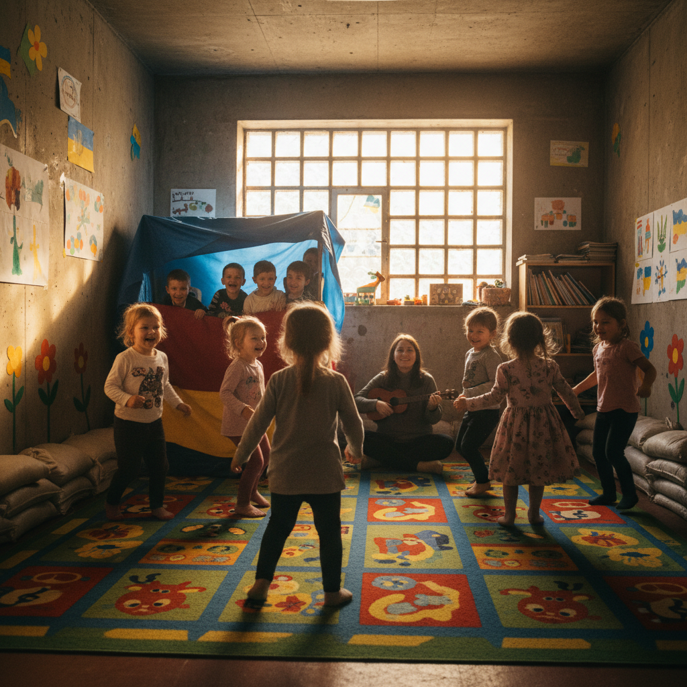
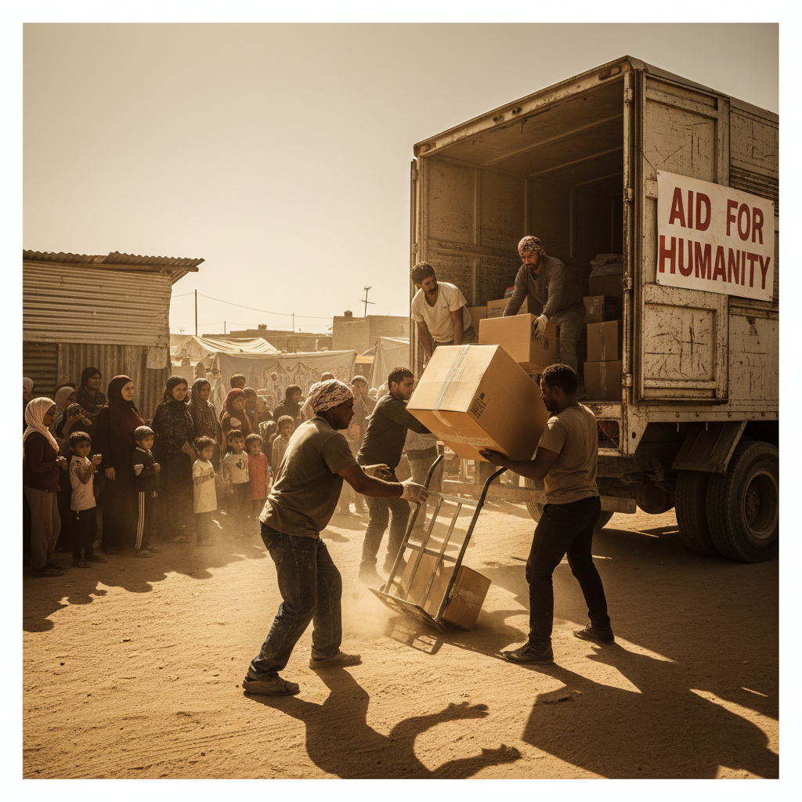
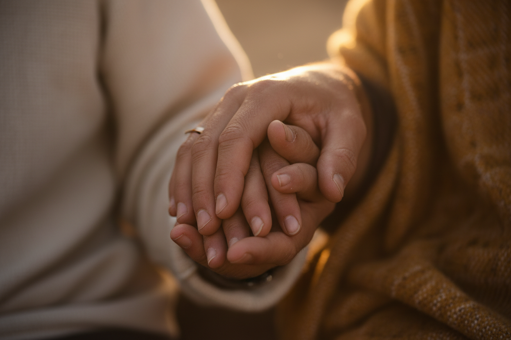
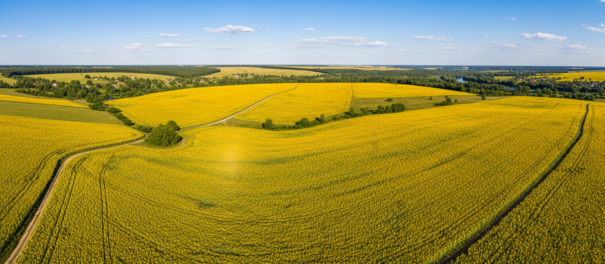
"We thought we had lost everything. But the people who came to help brought more than just food — they brought the hope we needed to keep going." — Olena P., Kharkiv Resident